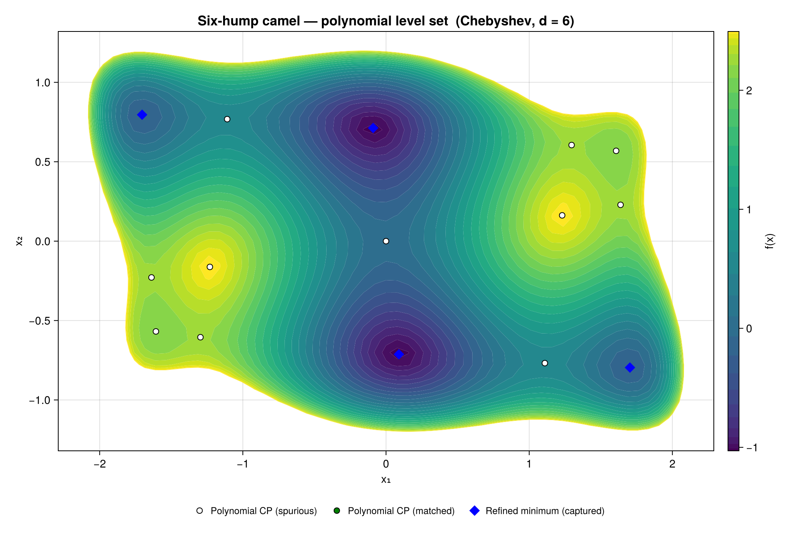
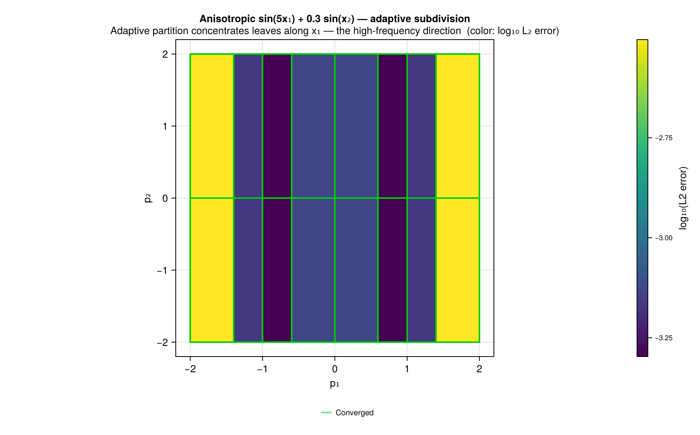
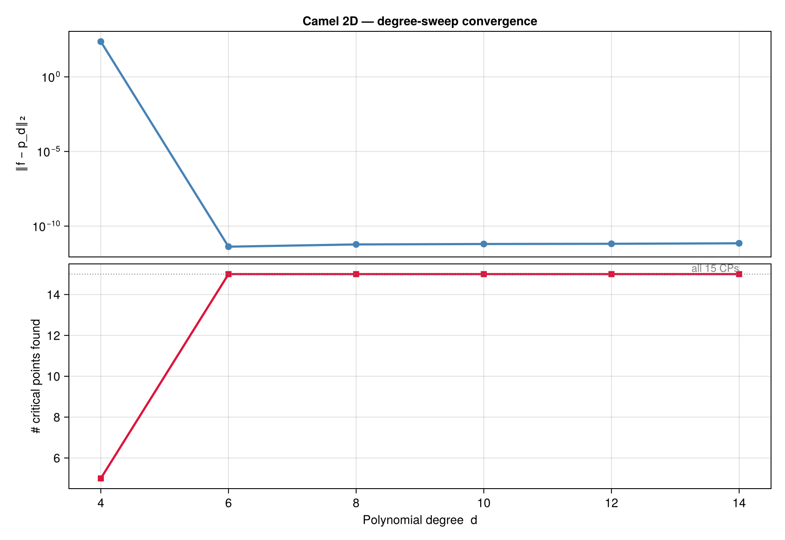
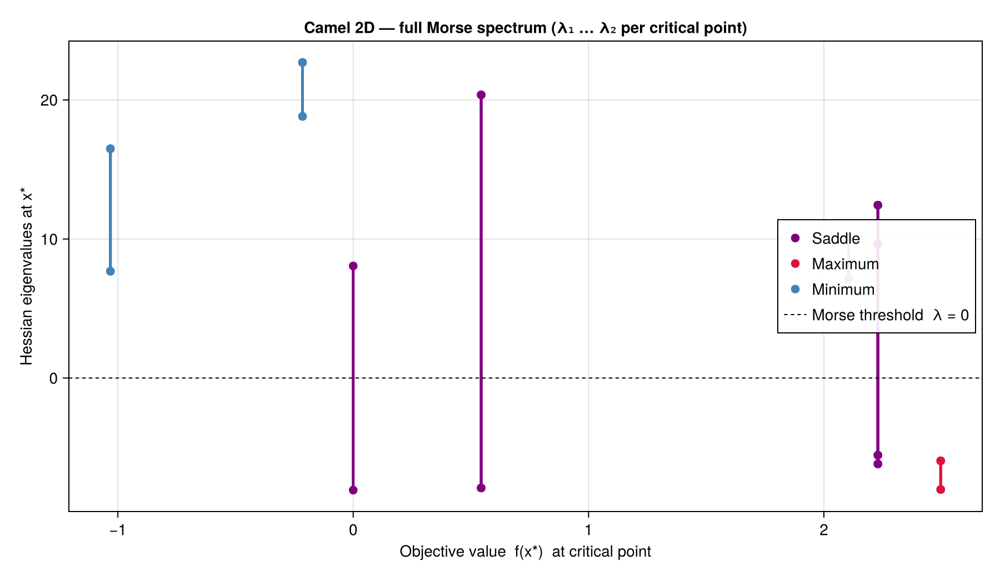

GlobtimPlots.jl
A Julia package for advanced plotting and visualization of global optimization algorithms and polynomial approximations.
Overview
GlobtimPlots.jl provides a comprehensive suite of plotting functions for:
- Level Set Visualization: Interactive and static level set plots
- 3D Surface Plots: Advanced 3D surface visualization with rotation and animation
- Convergence Analysis: Statistical analysis and visualization of algorithm convergence
- Eigenvalue Analysis: Specialized plots for Hessian eigenvalues and condition numbers
- Error Function Visualization: 1D and 2D error function plots with critical points
Gallery
Sample outputs regenerated by examples/gallery.jl:
Polynomial approximation level set — cairo_plot_polyapprox_levelset on the Camel function:

Adaptive subdivision partition — plot_subdivision_partition on an anisotropic test function (high frequency in x1, low frequency in x2). The algorithm subdivides only along x_1; color encodes log10 L2 error per leaf:

Convergence vs polynomial degree — Camel degree sweep with L2 approximation error (log, left axis) and number of recovered critical points (right axis). Both pivot dramatically between degree 4 and degree 6:

Morse spectrum at each critical point — Hessian eigenvalues as a vertical segment from λ₁ to λ₂, colored by Morse classification. Minima above y=0 (positive definite), maxima below (negative definite), saddles cross the Morse threshold:

Features
Static Plotting (CairoMakie Backend)
- High-quality publication-ready plots
- Level set visualization
- Convergence analysis plots
- Statistical distribution plots
- Eigenvalue spectrum analysis
Interactive Plotting (GLMakie Backend)
- Real-time 3D surface visualization
- Interactive level sets
- Animation sequences
- Camera flyover animations
- Real-time algorithm tracking
Installation
GlobtimPlots is not yet registered in the General registry; install it (and a Makie backend) from its public repository:
using Pkg
Pkg.add(url="https://github.com/gescholt/GlobtimPlots.jl")
Pkg.add("CairoMakie") # static backend; or GLMakie for interactive windowsQuick Start
Load a Makie backend (CairoMakie for static files, GLMakie for interactive windows) before any plot call, then render a polynomial level set with its critical points:
using Globtim, GlobtimPlots
using CairoMakie
using DynamicPolynomials: @polyvar
using HomotopyContinuation # enables the :hc critical-point solver
# 1. Approximate a test function and solve for its critical points (Globtim)
TR = TestInput(camel; dim=2, center=[0.0, 0.0], GN=200, sample_range=5.0)
pol = Constructor(TR, 6, basis=:chebyshev, precision=RationalPrecision)
@polyvar x[1:2]
df_cp = process_crit_pts(solve_polynomial_system(x, pol), camel, TR)
df_cp, df_min = analyze_critical_points(camel, df_cp, TR; tol_dist=0.00125)
# 2. Plot the level set with critical points overlaid (GlobtimPlots)
apol = adapt_polynomial_data(pol)
ainp = adapt_problem_input(TR)
fig = cairo_plot_polyapprox_levelset(apol, ainp, df_cp, df_min; title="Six-hump camel")
CairoMakie.save("camel_levelset.png", fig)This is the recipe used to generate the gallery image above; the full version with the Morse spectrum, subdivision partition, and convergence sweep lives in pkg/globtimplots/examples/gallery.jl.
Migration from Globtim
This package extracts plotting functionality from the main Globtim package to provide:
- Cleaner separation of concerns
- Reduced dependencies in core optimization code
- Extensible plotting system
- Better maintainability
See the Migration Guide for detailed migration instructions.